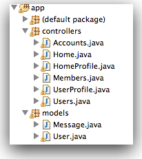
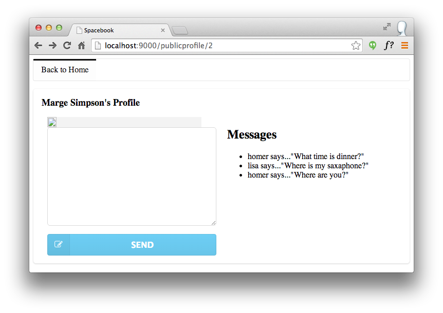

Objectives
Convert the remaining 'name' based routes to 'id. Introduce a new model class to represent messages and incorporate messaging write/read into the controllers/views. Finally, introduce support for image upload/download
Lab10 Project
You should have a project from last weeks lab. If you dont have the project then this is a version (before the exercises) here
Lab10 Exercise Solutions
Exercise 1
Currently, when you follow a member there is not obvious change on the screen. i.e. you remain on the members page.
public static void follow(Long id)
public static void follow(Long id)
{
User friend = User.findById(id);
String userId = session.get("logged_in_userid");
User me = User.findById(Long.parseLong(userId));
me.befriend(friend);
index();
}
Change this such that when you follow a member, the home page is displayed immediately - where the new entry in the 'following' list should appear. Hint: You will have to call the index() method on the Home class (instead of the Members class as currently)
Exercise 1 Solution:
Change the last line of the follow action to this:
Home.index();
(remove the existing last line)
Exercise 2
Is there a way we can display the number of friends we have on the home screen - perhaps in brackets after the 'Friends' text.
Recall that we are accessing the followers list in the 'home/index.html' view:
<h2>Friends</h2>
<div class="ui list">
#{list items:user.friendships, as:'friendship'}
<div class="item">
<i class="right triangle icon"></i>
<a href="/publicprofile/${friendship.targetUser.id}"> ${friendship.targetUser.firstName} ${friendship.targetUser.lastName}</a>
(<a href="/home/drop/${friendship.targetUser.id}"> drop </a>)
</div>
#{/list}
</div>
'user.friends' is the list friends, and 'user.friends.size()' will retrieve the number of entries in this list. In order to use this in a html element, you would need to surround it with ${...}, as in: '${user.friends.size()}
Exercise 2 Solution
Replace the current header in views/Home/index.html with this:
<h2>Friends (${user.friendships.size()})</h2>
Message Model
The first of the last two features we will tackle will be messages. This is interesting, as it will require a new model class to store messages + mechanisms for leaving and retrieving messages. We start with the model - we need a new class to represent individual messages. This is a 'Model' class, and will live in the model package - alongside our only other model class so far, User.
To create this model, select the models package in eclipse, right click, and select the 'New->Class', ccall the class 'Message'. This should create a new class on your 'models' package:

The class will be empty:
package models;
public class Message
{
}
Instances of this class will hold individual messages, sent from one user to another. Each message is just a simple string - we can introduce it now as a member of the class - we will call it 'messageText':
public class Message extends Model
{
public String messageText;
//...
}
We also need to know who sent the message, and whom it is intended for. These can also me modeled as class members
public class Message extends Model
{
public String messageText;
public User from;
public User to;
//...
}
To make creating instances of Message more convenient, we can introduce a constructor, which will initialise the members we have just introduced:
public class Message extends Model
{
public String messageText;
public User from;
public User to;
public Message(User from, User to, String messageText)
{
this.from = from;
this.to = to;
this.messageText = messageText;
}
}
This simple class is functionally complete, however there is one more step required. We would like instances of the class to persist to a database - i.e. be saved somewhere whenever we log out, so that they can be restored when the next user logs in. There are may ways of doing this, we are going to use a mechanism called 'JPA'.
Just after the 'package models;' statement at the top of the file, introduce the necessary import statements to make the JPA mechanisms available:
import javax.persistence.*;
import play.db.jpa.*;
Now we will need to 'annotate' the class, essentially 'marking' specific parts of the class such that the JPA libraries will be able to 'persist' the class effectively. Here is the complete class (including the annotations):
package models;
import javax.persistence.*;
import play.db.jpa.*;
@Entity
public class Message extends Model
{
public String messageText;
@ManyToOne
public User from;
@ManyToOne
public User to;
public Message(User from, User to, String messageText)
{
this.from = from;
this.to = to;
this.messageText = messageText;
}
}
- @Entity: This indicates that the entire class will be saved to a database
- @ManyToOne: This indicates that the attirbute immediately following is another entity (also persisted), and that there may be many messages associated with that entity.
Once we have defined messages, we new establish relationships from the User to this class. One approach would be to model the notion of an 'inbox' and 'outbox' - i.e. the list of messages a user has sent, or has received.
Introduce the following two new attributes into the User model:
@OneToMany(mappedBy = "to")
public List<Message> inbox = new ArrayList<Message>();
@OneToMany(mappedBy = "from")
public List<Message> outbox = new ArrayList<Message>();
You should be able to make sense of these now.
sendMessage action I
It should be possible to leave Messages when we visit the public profile of a user:

This is enabled by a new form we can insert into -'views/PublicProfile/visit.html':
<form action="/publicprofile/sendmessage/${user.id}" class="ui form" method="post">
<div class="field">
<textarea name="messageText"></textarea>
</div>
<button class="ui fluid blue labeled submit icon button">
<i class="icon edit"></i> Send
</button>
</form>
Pace this inside the first column (below the division for the image)
There are three key aspects to implementing this new feature:
- who is the message for?
- what is the message text?
- who is sending the message?
Who is the message for?
We tackle the first one by providing the Id of the target user in the route:
POST /publicprofile/sendmessage/{id} PublicProfile.sendMessage
This is the associated a new action on the PublicProfile controller:
public static void sendMessage(Long id, String messageText)
{
Logger.info("Message from user ID " + id + ": " + messageText);
visit (id);
}
What is the message text?
The message text is entered into this element:
<textarea name="messageText"></textarea>
.. and delivered into the action as a parameter:
...
public static void sendMessage(Long id, String messageText)
...
Who is sending the message?
In the above implementation, we are just logging out to the terminal the user id and message.
Save everything, and reload a profile for a user, enter a message, and press the "Leave Message" button. If everything goes according to plan, then we should see something like this in the terminal window:
13:40:40,096 INFO ~ Message from user ID 2: test
13:40:32,664 INFO ~ Just visiting the page for marge Simpson
Now we have successfully conveyed message text, entered by the user, to the web app. Our next step will be to figure out the following:
- Who the message is from
and then save the message with these characteristics. We will do this in the next step.
sendMessage action II
Figuring out who sent the message is straightforward - it is whoever is currently logged in. Remember in the HomeProfile class we were able to get the current user by accessing the 'session':
String userId = session.get("logged_in_userid");
User user = User.findById(Long.parseLong(userId));
We can use the same technique here in the UserProfile class:
public static void sendMessage(Long id, String messageText)
{
String userId = session.get("logged_in_userid");
User fromUser = User.findById(Long.parseLong(userId));
//...
}
'fromUser' now contains the user object for the sender of the message. Getting the user the message is intended for is easy - we have the id of that user as the parameter to the 'leaveMessage' function:
public static void sendMessage(Long id, String messageText)
{
String userId = session.get("logged_in_userid");
User fromUser = User.findById(Long.parseLong(userId));
User toUser = User.findById(id);
//...
}
To test all of this, we can rework the log statement to print out the full names of the sender and receiver:
public static void sendMessage(Long id, String messageText)
{
String userId = session.get("logged_in_userid");
User fromUser = User.findById(Long.parseLong(userId));
User toUser = User.findById(id);
Logger.info("Message from user " +
fromUser.firstName + ' ' + fromUser.lastName +" to " +
toUser.firstName + ' ' + toUser.lastName +": " +
messageText);
visit(id);
}
We can try this out now (saving everything) - and we should get a log message something like this when we leave a message:
13:54:35,798 INFO ~ Message from user Homer Simpson to marge Simpson: test
Logging is useful for verifying that our implementation is on the right track. However, we do need to save this message to the database if we are going to be able to display message on the various profile pages.
We already have the 'Message' class designed to help with this. Now we introduce a new method in the User class to store new messages:
public void sendMessage (User to, String messageText)
{
Message message = new Message (this, to, messageText);
outbox.add(message);
to.inbox.add(message);
message.save();
}
We now include call to this method in the sendMessage action:
public static void sendMessage(Long id, String messageText)
{
String userId = session.get("logged_in_userid");
User fromUser = User.findById(Long.parseLong(userId));
User toUser = User.findById(id);
Logger.info("Message from user " +
fromUser.firstName + ' ' + fromUser.lastName +" to " +
toUser.firstName + ' ' + toUser.lastName +": " +
messageText);
fromUser.sendMessage(toUser, messageText);
visit(id);
}
Note the last statement - visit(id) - this is to make sure that once we have accepted the new message, we display the correct users profile page again. You should be able to try this our now - leave messages, and verify that the user profile page reloads successfully.
Note, however, that the messages don;t seem to be going anywhere, and our message text area is cleared every time we leave a message. We need to find a way of listing the messages on this page, on the right where we currently have a 'hard coded' message.
Before doing that, though, we can still verify whether the messages are being saved to the database. This can be done via the '@db' interface we explored earlier. Browse to this url here:
...and navigate to the messages table, running the default query:

Displaying Messages
Now that we can leave messages, and have them 'persisted', or next step will be to display them when a users profile is being rendered. Currently we have a hard-coded message in this position - this is the relevant html fragment in views/PublicProfile/visit.html:
<h2> Messages </h2>
<ul>
<li>homer says..."What time is dinner?"</li>
<li>lisa says..."Where is my saxaphone?"</li>
<li>homer says..."Where are you?"</li>
</ul>
In order to be able to display the messages in this div, we will first need to review how this page itself it rendered. Recall this page is loaded by the 'visit' method of the 'PublicProfile' class:
public static void visit(Long id)
{
User user = User.findById(id);
Logger.info("Just visiting the page for " + user.firstName + ' ' + user.lastName);
render(user);
}
The call to 'render' passes the User object representing the user whose profile we are browsing.
In order to display the message, we rework the html fragment we reviewed above, this time we are writing a simple loop to populate the html list:
<div class="ui small header">Messages</div>
<hr>
<ul>
#{list items:user.inbox, as:'message'}
<li>
${message.from.firstName} says... ${message.messageText}
</li>
#{/list}
</ul>
This is the most opaque of the 'template' code we have looked at so far. Its structure is difficulty to read, but you should be able to make out the essentials. The object 'usermessages' is being passed to the view, and in the view we do the following:
- determine if there are any messages in the object
- if there are, generate a 'ul' element and..
- populate that ul' with a collection of 'li' elements, containing..
- the first name of the message sender + the message text itself
Note how we navigate through the message object using '.' notation, e.g. 'usermessage.from.firstName' and 'usermessage.messageText'
Try leaving some messages now - and you should expect to see the messages immediately on the same page. Also, log out and log in as someone else. Leave some messages from this user. Log back in as the first user and see how the messages list grows.
Home View
The home page is still displaying hard coded 'static' messages. This is the relevant html fragment:
<h2>Messages</h2>
<div class="ui list">
<div class="item">
<i class="right triangle icon"></i> marge says..."Hey there Homer, when are you going to work?"
</div>
<div class="item">
<i class="right triangle icon"></i> lisa says..."Move off the couch dad!"
</div>
</div>
This is the current 'Home' method that displays the home page:
public static void index()
{
String userId = session.get("logged_in_userid");
User user = User.findById(Long.parseLong(userId));
render(user);
}
As the inbox is already part of the user object passed to the view 'views/Home/index.html', we will display these messages as follows:
<h2>Messages</h2>
<div class="ui list">
#{list items:user.inbox, as:'message'}
<div class="item">
<i class="right triangle icon"></i> ${message.from.firstName} says... ${message.messageText}
</div>
#{/list}
</div>
Thus, when a user logs in they will see any messages that have been left for them. Try this now. Leave messages for different users, and verify that they do appear when the relevant users log in.
Pictures
Our final feature is to facilitate the uploading of a profile picture for a user. This is a feature to be available on the public profile view: The first step to introduce a new attribute into the User model class to hold the profile picture:
public Blob profilePicture;
Bring this in just after the statusText member.
You will also need to 'import' this type - so anywhere in the imports section, include this line:
import play.db.jpa.Blob;
Now in the Profile controller, we need two new methods - one to retrieve the profile picture, and one to upload it:
public static void getPicture(Long id)
{
User user = User.findById(id);
Blob picture = user.profilePicture;
if (picture.exists())
{
response.setContentTypeIfNotSet(picture.type());
renderBinary(picture.get());
}
}
public static void uploadPicture(Long id, Blob picture)
{
User user = User.findById(id);
user.profilePicture = picture;
user.save();
index();
}
Again, import the blob in the top of this controller:
import play.db.jpa.Blob;
Some of this code may start to become familiar. Each of the actions takes and ID - this is the id of the user whose picture we wish to upload/download.
In uploadPicture - we merely make sure the picture is saved in the database. In getPicture, we first see if there is in fact a picture for this user - if there is we 'render' it, otherwise we do nothing.
Next we must introduce two routes to match these actions:
POST /profile/uploadpicture/{id} Profile.uploadPicture
GET /profile/getpicture/{id} Profile.getPicture
These should be self-explanatory.
Finally, we need to make sure our view uses precisely these routes. This is the relevant section of views/Profile/index.html:
<div class="ui column">
<p>
<img src="images/homer.gif" />
</p>
<form action="homeprofile/upload" method="post" enctype="multipart/form-data">
<input type="file" name="userfile" value="" /> <input type="submit" name="submit" value="upload" />
</form>
</div>
Completely replace the above with this version:
<div class="ui column">
<p>
<img src="/profile/getpicture/${user.id}">
</p>
<form action="/profile/uploadpicture/${user.id}" method="post" enctype="multipart/form-data">
<input type="file" name="picture" />
<input type="submit" name="submit" value="upload" />
</form>
</div>
Note carefully the routes used, and also the input type 'file'.
Save everything and see if this works as expected.
Our final change will be to the user profile page - when we visit a users page we must display the image in the database for that user (not a hard coded reference to a file in the images directory). This is in UserProfile/visit.html. The images is now available via the route:
<img src="/profile/getpicture/${user.id}"/>
This completes all of the features we will introduce this semester.